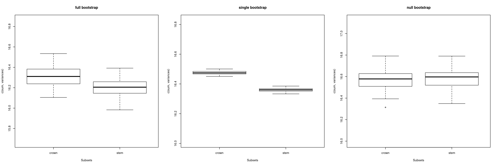
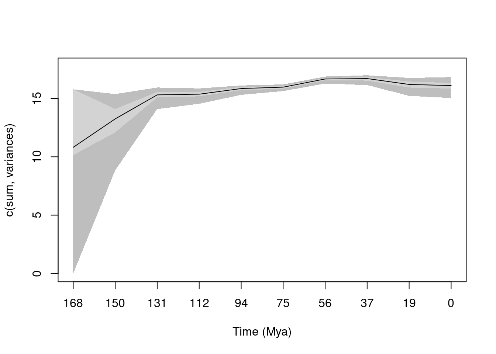
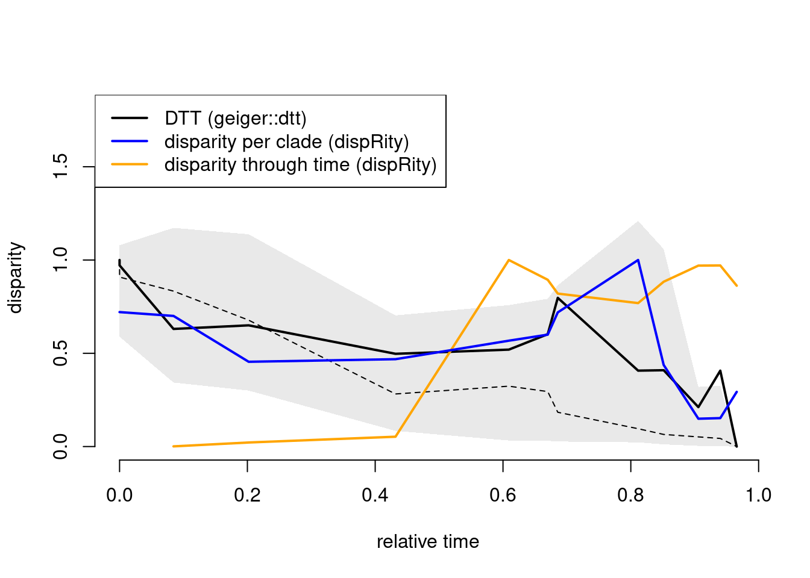

4 From disparity to macroevolution
CATCHING UP ZONE: here’s some example discrete dataset from Beck and Lee (2014) with ancestral states estimations and
[Click to expand the data loading part]:
## Get discrete data
discrete_traits <- read.nexus.data("../examples/discrete_characters/Beck2014.nex")
## Combine the output list into a matrix (rows are species and columns are characters)
discrete_data <- do.call(rbind, discrete_traits)
## Get the tree
discrete_tree <- read.nexus("../examples/trees/Beck2014.tre")
## Cleaning both the tree and the data to match
cleaned_data <- clean.data(data = discrete_data, tree = discrete_tree)
discrete_data <- cleaned_data$data
discrete_tree <- cleaned_data$tree
## The following were dropped:
cleaned_data$dropped_rows## [1] "Montanalestes" "Lainodon" "Kharmerungulatum" "Alymlestes"cleaned_data$dropped_tips## [1] NA## Adding node labels
discrete_tree <- makeNodeLabel(discrete_tree, prefix = "n")
## Adding the root time
discrete_tree$root.time <- max(tree.age(discrete_tree)$age)
## Estimating ancestral states
ancestral_states <- multi.ace(discrete_data, discrete_tree, output = "combined")
# Calculating the distance matrix
distance_matrix <- char.diff(ancestral_states, method = "mord", by.col = FALSE)
## Ordinating the data
my_pco <- cmdscale(distance_matrix,
# the number of dimensions
k = ncol(distance_matrix)-2,
# the Cailliez correction
add = TRUE)
## Getting just the coordinates
my_traitspace <- my_pco$pointsOnce we have our question at hand (and an idea of how to measure disparity) we can finally start doing some cool stuff and use disparity to tell macroevolutionary (or ecological!) stories.
4.1 Testing hypothesis with disparity data
One first aspect for these type of analyses, is to split the data in a meaningful way that will illustrate the process in question.
We can split it through time (we’ll cover that very soon) or by groups using the dispRity::custom.subsets function.
4.1.1 Making subsets
This function is relatively easy to use, you can just provide your trait space and a specific way to group you data. For example that could be two different clades or some lists of species with specific characteristics (e.g. diet).
USE YOUR DATA: set up your groups based on your own data.
Either load a data frame (.csv) with different categories, for example:
, diet, group
species_a, omnivore, group A
species_b, omnivore, group B
species_c, carnivore, group A## Read your favourite csv file (you'll need to set up the path yourself!)
my_data_groups <- read.csv("path_to_my_super_serious_dataset.csv")or else you can just create your list manually
## Making a list of different groups
my_data_groups <- list("omnivores" = c("species_a", "species_b", ...),
"carnivores" = c("species_c", ...))Here we will just group the species from the example dataset into crown and stem mammals using the dispRity::crown.stem function:
CATCHING UP ZONE: Creating two groups from the Beck and Lee (2014) dataset: the crown and the stem mammals
## Crown and stem mammals
my_data_groups <- crown.stem(tree = discrete_tree, inc.nodes = TRUE)And here’s how we can create the groups into a "dispRity" object:
## Grouping the data into different subsets
my_groups <- custom.subsets(my_traitspace, group = my_data_groups)Note from here on we will be heavily relying on "dispRity" objects.
They are a specific R class of objects (S3 - for those that know what that is more nerding here) that are attached to the dispRity package.
It allows for easier visualisation (plotting, printing, summarising) and neater easier to reproduce analysis: each step is configured by you and is sharable and savable.
## What is the class of my_groups?
class(my_groups)## [1] "dispRity"## What's in it?
my_groups## ---- dispRity object ----
## 2 customised subsets for 203 elements in one matrix:
## crown, stem.## What does it look like in 2D
plot(my_groups)Once we have this groups sorted, we can easily measure disparity:
## The sum of variance of our groups
my_disparity <- dispRity(my_groups, metric = c(sum, variances))
my_disparity## ---- dispRity object ----
## 2 customised subsets for 203 elements in one matrix with 201 dimensions:
## crown, stem.
## Disparity was calculated as: c(sum, variances).## What's the difference in variance?
summary(my_disparity)## subsets n obs
## 1 crown 103 16.48
## 2 stem 99 16.36We can compare the values of disparity we have between our two groups and tell a story about it. For example, with the example dataset we have a slight increase in variance in the crown mammals compared to the stem ones indicating maybe a increase in trait space occupancy through the phylogeny? But that’s very anecdotal and needs more convincing. We probably want to do some statistical test!
A personal note on statistical testing for statophobes: we are now entering the zone when there’s going to be p-values and other statistical bits that can be a bit scary. But fear not: although statistics (and researchers) often present this as an objective measure of the truth that has to be rigorous and final, I see it much more as a methodical way to convince our colleagues that our hypothesis is justifiable. I think that statistics are not the truth but a very rigorous and shareable way to explain what is happening in the natural world. A great paper to this effect is Dushoff, Kain, and Bolker (2019) that neatly suggests changing the word “significant” (i.e. a magical black box word that makes your research correct or not) into the more commonly english word “clearly” (i.e. a normal word that does call any magic: “disparity in group A is clearly/not clearly different than in group B”). Hopefully this approach will make you more relaxed about the following session and just see it as a rigorously subjective way to convince your comrades rather than some objective dark magic! Note that note all my comrades (e.g. Muff et al. (2022)) share this view of statistics though ;).
4.1.2 Bootstrapping and rarefying
One way to check whether these two samples are truly different and not only different by chance is to bootstrap the data. Bootstrapping is an easy way to look at the quality of your data (Efron and Tibshirani (1994) [^3]). Basically it consists of randomly resampling your data (with replacement) a certain number of times. Effectively this means randomly increasing the weight of some of your data points (the ones resampled) and reducing the weight of some other (the ones not resampled). [^3] If you’re ever struggling with stats and R, they made an excellent YouTube playlist of 68 short stats courses. Do one per day after lunch and you’ll be a stats expert in 3.5 months!
## Bootstrapping the data
my_disparity <- dispRity(boot.matrix(my_groups),
metric = c(sum, variances))
my_disparity## ---- dispRity object ----
## 2 customised subsets for 203 elements in one matrix with 201 dimensions:
## crown, stem.
## Data was bootstrapped 100 times (method:"full").
## Disparity was calculated as: c(sum, variances).## What the difference in variance after bootstrapping?
summary(my_disparity)## subsets n obs bs.median 2.5% 25% 75% 97.5%
## 1 crown 103 16.48 16.35 16.12 16.28 16.40 16.53
## 2 stem 99 16.36 16.22 16.06 16.15 16.26 16.34With the example dataset we see again a very small difference but with small-ish overlap in the confidence intervals:
## Visualising the difference in distribution
plot(my_disparity)This difference though might be due to the difference in number of species (more species in the crown group means more disparity?). You can check that by rarefying your data. This is a variant of the bootstrapping procedure but instead of resampling the same number of elements, you can set a specific number of elements to resample (or several numbers):
## Get the size of the smallest group@
n_small <- min(size.subsets(my_groups))
## Bootstrapping the data
my_disparity <- dispRity(boot.matrix(my_groups, rarefaction = n_small),
metric = c(sum, variances))
my_disparity## ---- dispRity object ----
## 2 customised subsets for 203 elements in one matrix with 201 dimensions:
## crown, stem.
## Data was bootstrapped 100 times (method:"full") and rarefied to 99 elements.
## Disparity was calculated as: c(sum, variances).## What the difference in variance after bootstrapping?
summary(my_disparity)## subsets n obs bs.median 2.5% 25% 75% 97.5%
## 1 crown 103 16.48 16.32 16.16 16.24 16.38 16.51
## 2 crown 99 NA 16.33 16.15 16.26 16.38 16.48
## 3 stem 99 16.36 16.22 16.06 16.15 16.26 16.34## Visualising the difference in distribution
plot(my_disparity)Here we can see it doesn’t make a big difference.
TINKER TIMES: here we just looked at the "full" bootstrapping algorithm (that resamples every elements or every number of elements with the rarefaction option).
You can also change it to the more conservative "single" bootstrapping that resamples only one element every time; or the "null" algorithm that resamples ALL the elements in the trait space (i.e. not only the elements in the group).
Think about what the difference each algorithm could make to your data and test it!
[Click to expand the solution]:
## Bootstrapping the data 3 ways
full_boot <- dispRity(boot.matrix(my_groups, boot.type = "full"),
metric = c(sum, variances))
single_boot <- dispRity(boot.matrix(my_groups, boot.type = "single"),
metric = c(sum, variances))
null_boot <- dispRity(boot.matrix(my_groups, boot.type = "null"),
metric = c(sum, variances))
## Plotting the differences
op <- par(mfrow = c(1,3))
plot(full_boot, main = "full bootstrap")
plot(single_boot, main = "single bootstrap")
plot(null_boot, main = "null bootstrap")
par(op)4.1.3 Testing hypotheses 1
Once we have a distribution of disparity values (here from our bootstrap), we can actually calculate the probability of our groups sharing the same distribution or not (i.e. calculating a p-value).
Because our distributions are not independent data (i.e. the values come from bootstraps, not observations), we can use a non-parametric t-test that doesn’t assume independence in the data: the Wilcoxon rank test (wilcox.test).
We can do that directly by extracting the bootstrapped disparity values (using get disparity):
## Extracting the disparity values
bootstrapped_values <- get.disparity(my_disparity, observed = FALSE)
## Testing the differences
wilcox.test(bootstrapped_values$crown[[1]], bootstrapped_values$stem[[1]])##
## Wilcoxon rank sum test with continuity correction
##
## data: bootstrapped_values$crown[[1]] and bootstrapped_values$stem[[1]]
## W = 8073, p-value = 6.035e-14
## alternative hypothesis: true location shift is not equal to 0Or, more nicely, by using the test.dispRity function:
## Running the test automatically on the dispRity object
test.dispRity(my_disparity, test = wilcox.test)## [[1]]
## statistic: W
## crown : stem 8073
##
## [[2]]
## p.value
## crown : stem 6.03536e-14Note that you can also use disparity statistics that are distributions rather than point estimates. E.g. all the
variancesdistribution instead of thec(sum, variances)point estimate. More info and examples here.
If you had multiple groups, you can try doing pairs of tests using comparisons (but think about correcting for p-value inflation using the correction option), or, more neatly by using an aov.
Note also that if you’re just interested in comparing the matrices for each subset (not their disparity), you can use the
adonis.dispRitywhich is a PERMANOVA wrapper function forvegan::adonis2.
4.2 Measuring disparity through time
One other obvious way to look at changes in disparity is to look at disparity through time. There are two main ways to look at it - which weirdly are both called “disparity through time”:
- Measuring disparity at different points in time. We are going to cover that first and call it simply disparity through time.
- Measuring disparity through time and comparing it to models of change in disparity. We are going to cover that later and call it
dtt.
And we’ll chat about the differences between both methods of course!
USE YOUR DATA: get the first and last occurrence data (FAD/LAD) for your own data (as a .csv file)
,FAD ,LAD
species_a, 37.20, 36.80
species_b, 83.60, 72.10## Read your favourite csv file (you'll need to set up the path yourself!)
my_FADLAD <- read.csv("path_to_my_super_serious_dataset.csv")CATCHING UP ZONE: Using the occurrence dataset from Beck and Lee (2014)
## Crown and stem mammals
my_FADLAD <- read.csv("../examples/FADLAD/Beck2014.csv", row.names = 1)4.2.1 Time binning
One first and relatively obvious way is to calculate disparity between groups but where groups are different time bins.
This is easily done in dispRity with the chrono.subsets function using the method = "discrete".
Here for example, we can create 5 equally sized time bins across the temporal distribution of our data:
## Creating discrete bin subsets
time_subsets <- chrono.subsets(my_traitspace, method = "discrete",
tree = discrete_tree, FADLAD = my_FADLAD,
time = 5)Note that if you have occurrence data for all your species you don’t need a
treeargument.
We can then calculate and visualise disparity
## Calculating disparity per bin
time_disparity <- dispRity(time_subsets, metric = c(sum, variances))
summary(time_disparity)## subsets n obs
## 1 168.35 - 134.68 3 16.52
## 2 134.68 - 101.01 7 16.64
## 3 101.01 - 67.34 31 16.72
## 4 67.34 - 33.67 50 17.26
## 5 33.67 - 0 18 17.33plot(time_disparity)Tada! That was super easy!
TINKER TIMES: you can also make it a little bit more interesting or at least a bit more related to geology by specifying time bins that correspond to geological layers.
You can do that by specifying a vector for time in the format of time = c(145, 66, 23) for the boundaries of the Cretaceous (from 145 million years - mya - to 66 mya) and the Palaeogene (66 to 23 mya). See if you can do that for your dataset.
[Click to expand the solution]:
## Option 1: enter the boundaries ages manually
## booooooring! - and prone to errors
## Option 2: use the palaeoverse package!
## Getting the geological time from the palaeoverse package
period_bins <- palaeoverse::time_bins(rank = "period")## Registered S3 method overwritten by 'e1071':
## method from
## print.fclust GET## Get the boundaries from Jurassic to present
period_bins_bounds <- c(period_bins[c(8:12), "max_ma"], 0)
## Creating the subsets
time_subsets_geo <- chrono.subsets(my_traitspace, method = "discrete",
tree = discrete_tree, FADLAD = my_FADLAD,
time = period_bins_bounds)## Warning: The interval 23.03 - 2.58 is empty.## Calculating disparity per bin
time_disparity2 <- dispRity(time_subsets_geo, metric = c(sum, variances))## Warning in dispRity(time_subsets_geo, metric = c(sum, variances)): Disparity
## not calculated for subset 23.03 - 2.58 (not enough data).summary(time_disparity2)## subsets n obs
## 1 201.3 - 145 3 16.52
## 2 145 - 66 40 16.86
## 3 66 - 23.03 50 17.31
## 4 23.03 - 2.58 0 NA
## 5 2.58 - 0 14 17.24plot(time_disparity2)This is all well and good but there can be some problems with the time binning method covered just above. We discuss most of the potential problems here: Guillerme and Cooper (2018). Two of the main ones are that:
- It assumes punctuated equilibrium disparity evolution (i.e. disparity is uniform within bins and changes only - and drastically - at bins boundary)
- It can artificially increase the effect of extinction events by forcing changes at a bin boundary.
4.2.2 Time slicing!
Let’s try to do a simple ACCTRAN model (accelerated transition) on ten time slices:
## Creating continuous time slices subsets
time_subsets <- chrono.subsets(my_traitspace, method = "continuous",
tree = discrete_tree, FADLAD = my_FADLAD,
time = 10, model = "acctran")
## Calculating disparity per bin
time_disparity <- dispRity(time_subsets, metric = c(sum, variances))
summary(time_disparity)## subsets n obs
## 1 168.35 3 15.79
## 2 149.64 6 16.22
## 3 130.94 14 16.38
## 4 112.23 18 16.22
## 5 93.53 26 16.44
## 6 74.82 36 16.41
## 7 56.12 38 17.09
## 8 37.41 24 17.41
## 9 18.71 15 17.28
## 10 0 14 17.24plot(time_disparity)Note that so far the model we use is not probabilistic, that means that every time you run it you’ll have the same solution.
However, some of the models (called the *.split models) are probabilistic in nature and would require you bootstrapping the data to show the range of estimated solutions:
## Creating continuous time slices subsets using a split model
gradual_split <- chrono.subsets(my_traitspace, method = "continuous",
tree = discrete_tree, FADLAD = my_FADLAD,
time = 10, model = "gradual.split")
## Calculating disparity per bin
time_disparity <- dispRity(boot.matrix(time_subsets), metric = c(sum, variances))
summary(time_disparity)## subsets n obs bs.median 2.5% 25% 75% 97.5%
## 1 168.35 3 15.79 10.81 0.00 10.15 15.79 15.79
## 2 149.64 6 16.22 13.25 8.84 12.09 14.10 15.38
## 3 130.94 14 16.38 15.31 14.09 15.08 15.56 15.94
## 4 112.23 18 16.22 15.37 14.55 15.19 15.56 15.86
## 5 93.53 26 16.44 15.85 15.31 15.72 15.99 16.11
## 6 74.82 36 16.41 15.97 15.63 15.84 16.08 16.21
## 7 56.12 38 17.09 16.67 16.28 16.56 16.75 16.88
## 8 37.41 24 17.41 16.71 16.15 16.53 16.84 16.99
## 9 18.71 15 17.28 16.20 15.22 15.94 16.45 16.76
## 10 0 14 17.24 16.11 15.04 15.85 16.33 16.83plot(time_disparity)
TINKER TIMES: have a look at comparing the different models of time-slicing and see how it changes your disparity curves (if it changes them at all!).
[Click to expand the solution]:
## Testing different models
gradual_split <- chrono.subsets(my_traitspace, method = "continuous",
tree = discrete_tree, FADLAD = my_FADLAD,
time = 10, model = "gradual.split")
equal_split <- chrono.subsets(my_traitspace, method = "continuous",
tree = discrete_tree, FADLAD = my_FADLAD,
time = 10, model = "equal.split")
acctran <- chrono.subsets(my_traitspace, method = "continuous",
tree = discrete_tree, FADLAD = my_FADLAD,
time = 10, model = "acctran")
deltran <- chrono.subsets(my_traitspace, method = "continuous",
tree = discrete_tree, FADLAD = my_FADLAD,
time = 10, model = "deltran")
## Calculating disparity per bin
gradual_split_disp <- dispRity(boot.matrix(gradual_split), metric = c(sum, variances))
equal_split_disp <- dispRity(boot.matrix(equal_split), metric = c(sum, variances))
acctran_disp <- dispRity(boot.matrix(acctran), metric = c(sum, variances))
deltran_disp <- dispRity(boot.matrix(deltran), metric = c(sum, variances))## Warning in boot.matrix(deltran): The following subsets have less than 3 elements: 168.35.
## This might effect the bootstrap/rarefaction output.op <- par(mfrow = c(2,2))
plot(gradual_split_disp, main = "gradual split")
plot(equal_split_disp, main = "equal split")
plot(acctran_disp, main = "acctran")
plot(deltran_disp, main = "deltran")par(op)4.2.3 dtt: disparity through time
dtt analyses are disparity through time analyses where the disparity is calculated for each clade in a given tree and then compared to a simulated disparity curve (usually a Brownian motion one) using the same tree.
This results in a comparison between an observed clade disparity curve scaled by the number of species and a simulated trait.
Note that this is quiet different than disparity through time how we measured it previously.
Here is a comparison with the three methods with:
- DTT being the disparity-through-time as described in Harmon et al. (2003) and calculated in Pennell et al. (2014);
- the raw disparity per clade calculated using
dispRity(and plotted through time). - the disparity through time using
dispRity(time-slicing using the proximity model).
Note that I’m not going to go in the details here but you can see and follow the code in the raw markdown file if you want.
## Warning in dispRity(time_subsets, metric = average.sq): Disparity not
## calculated for subset 0.5833 (not enough data).
You can see there is some difference between all the curves here!
The ones between the DTT and the clade disparity (black and blue) can be probably explained by algorithmic choices between both approaches (the scaling procedure is a bit more complex in geiger:dtt and the clade disparity values are time slice averages - from what I understood).
But in general both curves are similar.
This is not the case though with the disparity through time analyses dispRity style where disparity is measured as snapshots of disparity in the trait space at any specific time point (here the nodes ages, corresponding to the clade ages).
So keep these two differences in mind and sorry about the confusing name similarities!
So which method is better? I have some opinion here but I’m biased and I like to remind you to choose the method best adapted to your question, not especially because of somebody’s opinion (e.g. mine).
That said, one of the major drawbacks I see with the dtt method is that, unfortunately, the implementation is not really modular.
It currently doesn’t allow trees with fossil data and it only works with three inbuilt disparity metrics.
In general though, both methods (dtt and disparity through time) both have the problem on ways to test null expectations that are easily to calculate but also make sense biologically.
For example, in dtt, comparing the observed disparity to a simple Brownian Motion can often be a bit naive and unsurprising (i.e. it’s often easily expected that some trait have a complex evolutionary history and are not just following a BM).
Stay tuned for some potential solution with the Guillerme (2024) package allowing to simulate more complex data and evolutionary histories to compare observed and simulated disparity. I’m still working on it but if you feel explorative, please contact me or check out this loooooong tutorial video and vignette.
4.3 Measuring disparity with trees
Finally, note that here we haven’t looked much at phylogenetic hypotheses and phylogenetic comparative methods. This is mainly because I didn’t want to add to much stuff and that we’ll have a great session dedicated to it tomorrow!
But here’s a brief example on how to look at disparity using standard phylogenetic generalised least square (pgls) method.
Note that this type of analysis is only relevant if you calculated disparity using a dimension level 2 metric that is linked to the rows (for example the distance of each element to the centroid using centroids) and if you have only data for your tips:
## Simple example
data(BeckLee_mat50)
data(BeckLee_tree)
disparity <- dispRity(BeckLee_mat50, metric = centroids, tree = BeckLee_tree)
## Running a simple PGLS
model <- pgls.dispRity(disparity)
summary(model)##
## Call:
## [1] "dispRity interface of phylolm using: formula = disparity ~ 1 and model = BM"
##
## AIC logLik
## -158.71 81.35
##
## Raw residuals:
## Min 1Q Median 3Q Max
## -0.06247 -0.02075 0.03188 0.07433 0.14999
##
## Mean tip height: 88.13181
## Parameter estimate(s) using ML:
## sigma2: 5.776737e-05
##
## Coefficients:
## Estimate StdErr t.value p.value
## (Intercept) 1.541096 0.024797 62.148 < 2.2e-16 ***
## ---
## Signif. codes: 0 '***' 0.001 '**' 0.01 '*' 0.05 '.' 0.1 ' ' 1
##
## R-squared: 0 Adjusted R-squared: 0We will be covering that in much more details tomorrow!
4.4 Telling disparity stories
We’ve looked at many methods but now it’s time to work on telling a story!
Here are some examples:
- Morphological evolutionary bursts in skinks by Brennan et al. (2024)
[Click here to read in the data]:
## Loading the data from Brennan 2024 (you will need to do the PCA yourself!)
data <- read.csv("../examples/continuous_characters/Brennan2024.csv")
## And here's the tree
tree <- read.tree("../examples/trees/Brennan2024.tre") - Mammals around the K-Pg extinction by Beck and Lee (2014)
[Click here to read in the data]:
## Loading the data from Beck and Lee 2014 (you will need to do the PCO yourself!)
data <- read.nexus.data("../examples/discrete_characters/Beck2014.nex")
## And here's the tree
tree <- read.nexus("../examples/trees/Beck2014.tre")
## And the tip ages
FADLAD <- read.csv("../examples/FADLAD/Beck2014.csv", row.names = 1) - Echinoderms during the Ordovician and Devonian by Wright (2017)
[Click here to read in the data]:
## Loading the data from Wright 2017 (you will need to do the PCO yourself!)
data <- read.nexus.data("../examples/discrete_characters/Wright2017.nex")
## And here's the tree
tree <- read.nexus("../examples/trees/Wright2017.tre")
## And the tip ages
FADLAD <- read.csv("../examples/FADLAD/Wright2017.csv", row.names = 1) - Dinosaurs - bird transition by Brusatte et al. (2014)
[Click here to read in the data]:
## Loading the data from Beck and Lee 2014 (you will need to do the PCO yourself!)
data <- read.nexus.data("../examples/discrete_characters/Brusatte2014.nex")
## And here's the tree
tree <- read.nexus("../examples/trees/Brusatte2014.nex")
## And the tip ages
FADLAD <- read.csv("../examples/FADLAD/Brusatte2014.csv", row.names = 1) - disparity through time in crocodiles by Godoy (2020)
[Click here to read in the data]:
load("../examples/gmm_characters/Godoy2019.RData")
## landmark data
# landmark_data
# semi_landmarks
## Tree
tree <- alter1_MCCT
GPA <- geomorph::gpagen(landmark_data, curves = semi_landmarks, surfaces = NULL, PrinAxes = TRUE, max.iter = NULL, ProcD = F, Proj = TRUE, print.progress = TRUE)##
## Performing GPA
## | | | 0% | |======= | 10% | |============== | 20% | |===================== | 30% | |============================ | 40% | |=================================== | 50% | |========================================== | 60% | |================================================= | 70% | |======================================================== | 80% | |=============================================================== | 90% | |======================================================================| 100%
##
## Making projections... Finished!traitspace <- dispRity::geomorph.ordination(GPA)- relation between changes in disparity and temperature in turtles by Farina et al. (2023)
[Click here to read in the data]:
## Loading the data from Farina 2023
load("../examples/continuous_characters/Farina2023.RData")
## This is the age of each tip
FADLAD <- fbd_ages
## This is a list of trees (note that you can do dispRity analyses with multiple trees!)
tree_list <- Sterli_10trees
## Data and factors (unidimensional)
traitspace_table <- data_turtlesOther cool examples:
- morphospace changes in brachiopods by Guo et al. (2024)
- diversification of sabertooth tigers by Chatar et al. (2024)
- Mezosoic archosaurs disparity by Shipley et al. (2024)
- convergence between mosasaurs and early cetacean skulls by Bennion et al. (2023)
- niche partitioning in marine reptiles by Foffa, Young, and Brusatte (2024)
TINKER TIMES: Do your very own disparity analysis!
Think about what the difference each algorithm could make to your data and test it!
[Click to expand the solution]:
Question: is there an effect of the the K-Pg extinction on mammalian disparity?
Here we will be looking at how the
1- From data to trait spaces
Here we will again use the data from Beck and Lee (2014) to test our hypothesis. We will transform the data by doing:
- Ancestral states estimations on discrete characters
- Calculating a distance matrix using the MORD distance (Lloyd (2016))
- Ordinating the distance matrix using a PCO with the Cailliez correction (Cailliez (1983))
## Get discrete data
discrete_traits <- read.nexus.data("../examples/discrete_characters/Beck2014.nex")
## Combine the output list into a matrix (rows are species and columns are characters)
discrete_data <- do.call(rbind, discrete_traits)
## Get the tree
discrete_tree <- read.nexus("../examples/trees/Beck2014.tre")
## Cleaning both the tree and the data to match
cleaned_data <- clean.data(data = discrete_data, tree = discrete_tree)
discrete_data <- cleaned_data$data
discrete_tree <- cleaned_data$tree
## Adding node labels
discrete_tree <- makeNodeLabel(discrete_tree, prefix = "n")
## Adding the root time
discrete_tree$root.time <- max(tree.age(discrete_tree)$age)
## Estimating ancestral states
ancestral_states <- multi.ace(discrete_data, discrete_tree, output = "combined")
# Calculating the distance matrix
distance_matrix <- char.diff(ancestral_states, method = "mord", by.col = FALSE)
## Ordinating the data
my_pco <- cmdscale(distance_matrix,
# the number of dimensions
k = ncol(distance_matrix)-2,
# the Cailliez correction
add = TRUE)
## Getting just the coordinates
my_traitspace <- my_pco$points2- From traitspace to disparity
From this traitspace we will choose one metric looking at the change in disparity trait space size using the sum of each dimension’s variance.
## Testing the sum of variances as a proxy of traitspace size
my_test <- test.metric(my_traitspace, metric = c(sum, variances), shifts = c("size", "random"))
plot(my_test)3 - From disparity to macroevolution
With the trait space and the chosen disparity metrics we can now test whether there is a change it trait space size or density before and after the K-Pg extinction?
## Creating the time subsets
time_subsets <- chrono.subsets(my_traitspace, tree = discrete_tree,
method = "continuous", model = "proximity",
time = rev(seq(from = 5, to = 125, by = 10)))
## Visualising the traitspace
plot(time_subsets)## Measuring disparity through time
disparity_size <- dispRity(boot.matrix(time_subsets), metric = c(median, centroids))
plot(disparity_size, main = "Change in trait space size")
abline(v = 7.2, col = "red")Testing the change in disparity in terms of of size after the K-Pg extinction with a lag of up to 30 million years:
## Selecting the two subsets after the mass extinction
extinction_effect <- list(c("65", "55"), c("65", "45"))
## Testing the differences in disparity
results <- test.dispRity(disparity_size, comparisons = extinction_effect,
test = wilcox.test, correction = "bonferroni")
results## [[1]]
## statistic: W
## 65 : 55 4997
## 65 : 45 9438
##
## [[2]]
## p.value
## 65 : 55 1.000000e+00
## 65 : 45 4.327658e-27Here we see now clear difference between before the K-Pg extinction (65 mya) and right after (55 mya) but some clear affect 20 million years later (45 mya). This suggest more an effect of the PETM 55 mya than the K-Pg on this dataset!
4.5 References
Baken, E. K., M. L. Collyer, A. Kaliontzopoulou, and D. C. Adams. 2021. “Geomorph V4.0 and gmShiny: Enhanced Analytics and a New Graphical Interface for a Comprehensive Morphometric Experience.” Methods in Ecology and Evolution 12: 2355–63.
Bapst, David W. 2012. “Paleotree: An R Package for Paleontological and Phylogenetic Analyses of Evolution.” Methods in Ecology and Evolution 3 (5): 803–7.
Beck, Robin MD, and Michael SY Lee. 2014. “Ancient Dates or Accelerated Rates? Morphological Clocks and the Antiquity of Placental Mammals.” Proceedings of the Royal Society B: Biological Sciences 281 (1793): 20141278.
Bell, Mark A., and Graeme T. Lloyd. 2015. “Strap: An R Package for Plotting Phylogenies Against Stratigraphy and Assessing Their Stratigraphic Congruence.” Palaeontology 58: 379–89. https://doi.org/10.1111/pala.12142.
Bennion, Rebecca F, Jamie A MacLaren, Ellen J Coombs, Felix G Marx, Olivier Lambert, and Valentin Fischer. 2023. “Convergence and Constraint in the Cranial Evolution of Mosasaurid Reptiles and Early Cetaceans.” Paleobiology 49 (2): 215–31.
Brazeau, Martin D. 2011. “Problematic Character Coding Methods in Morphology and Their Effects.” Biological Journal of the Linnean Society 104 (3): 489–98.
Brennan, Ian G, David G Chapple, J Scott Keogh, and Stephen Donnellan. 2024. “Evolutionary Bursts Drive Morphological Novelty in the World’s Largest Skinks.” bioRxiv, 2024–06.
Brusatte, Stephen L, Graeme T Lloyd, Steve C Wang, and Mark A Norell. 2014. “Gradual Assembly of Avian Body Plan Culminated in Rapid Rates of Evolution Across the Dinosaur-Bird Transition.” Current Biology 24 (20): 2386–92.
Cailliez, Francis. 1983. “The Analytical Solution of the Additive Constant Problem.” Psychometrika 48 (2): 305–8.
Chatar, Narimane, Margot Michaud, Davide Tamagnini, and Valentin Fischer. 2024. “Evolutionary Patterns of Cat-Like Carnivorans Unveil Drivers of the Sabertooth Morphology.” Current Biology 34 (11): 2460–73.
Ciampaglio, Charles N, Matthieu Kemp, and Daniel W McShea. 2001. “Detecting Changes in Morphospace Occupation Patterns in the Fossil Record: Characterization and Analysis of Measures of Disparity.” Paleobiology 27 (4): 695–715.
Dushoff, Jonathan, Morgan P Kain, and Benjamin M Bolker. 2019. “I Can See Clearly Now: Reinterpreting Statistical Significance.” Methods in Ecology and Evolution 10 (6): 756–59.
Efron, Bradley, and Robert J Tibshirani. 1994. An Introduction to the Bootstrap. Chapman; Hall/CRC.
Farina, Bruna M, Pedro L Godoy, Roger BJ Benson, Max C Langer, and Gabriel S Ferreira. 2023. “Turtle Body Size Evolution Is Determined by Lineage-Specific Specializations Rather Than Global Trends.” Ecology and Evolution 13 (6): e10201.
Foffa, Davide, Mark T Young, and Stephen L Brusatte. 2024. “Comparative Functional Morphology Indicates Niche Partitioning Among Sympatric Marine Reptiles.” Royal Society Open Science 11 (5): 231951.
Gearty, William. 2024. Deeptime: Plotting Tools for Anyone Working in Deep Time. https://CRAN.R-project.org/package=deeptime.
Godoy, Pedro L. 2020. “Crocodylomorph Cranial Shape Evolution and Its Relationship with Body Size and Ecology.” Journal of Evolutionary Biology 33 (1): 4–21.
Guillerme, Thomas. 2018. “DispRity: A Modular R Package for Measuring Disparity.” Methods in Ecology and Evolution 9 (7): 1755–63.
———. 2024. “Treats: A Modular R Package for Simulating Trees and Traits.” Methods in Ecology and Evolution 15 (4): 647–56.
Guillerme, Thomas, Pedro Cardoso, Maria Wagner Jørgensen, Stefano Mammola, and Thomas J Matthews. 2024. “The What, How and Why of Trait-Based Analyses in Ecology.” bioRxiv, 2024–06.
Guillerme, Thomas, and Natalie Cooper. 2018. “Time for a Rethink: Time Sub-Sampling Methods in Disparity-Through-Time Analyses.” Palaeontology 61 (4): 481–93.
Guillerme, Thomas, Natalie Cooper, Stephen L Brusatte, Katie E Davis, Andrew L Jackson, Sylvain Gerber, Anjali Goswami, et al. 2020. “Disparities in the Analysis of Morphological Disparity.” Biology Letters 16 (7): 20200199.
Guillerme, Thomas, Mark N Puttick, Ariel E Marcy, and Vera Weisbecker. 2020. “Shifting Spaces: Which Disparity or Dissimilarity Measurement Best Summarize Occupancy in Multidimensional Spaces?” Ecology and Evolution 10 (14): 7261–75.
Guo, Zhen, Michael J Benton, Thomas L Stubbs, and Zhong-Qiang Chen. 2024. “Morphological Innovation Did Not Drive Diversification in Mesozoic–Cenozoic Brachiopods.” Nature Ecology & Evolution, 1–11.
Harmon, Luke J, James A Schulte, Allan Larson, and Jonathan B Losos. 2003. “Tempo and Mode of Evolutionary Radiation in Iguanian Lizards.” Science 301 (5635): 961–64.
Hopkins, Melanie J, and Sylvain Gerber. 2021. “Morphological Disparity.” Evolutionary Developmental Biology: A Reference Guide, 965–76.
Jones, Lewis A., William Gearty, Bethany J. Allen, Kilian Eichenseer, Christopher D. Dean, Sof<U+00ED>a Galv<U+00E1>n, Miranta Kouvari, et al. 2023. “Palaeoverse: A Community-Driven R Package to Support Palaeobiological Analysis.” Methods in Ecology and Evolution, 1–11. https://doi.org/10.1111/2041-210X.14099.
Legendre, Pierre, and Louis Legendre. 2012. Numerical Ecology. Vol. 24. Elsevier.
Lloyd, Graeme T. 2016. “Estimating Morphological Diversity and Tempo with Discrete Character-Taxon Matrices: Implementation, Challenges, Progress, and Future Directions.” Biological Journal of the Linnean Society 118 (1): 131–51.
———. 2018. “Journeys Through Discrete-Character Morphospace: Synthesizing Phylogeny, Tempo, and Disparity.” Palaeontology 61 (5): 637–45.
Mammola, Stefano, Carlos P Carmona, Thomas Guillerme, and Pedro Cardoso. 2021. “Concepts and Applications in Functional Diversity.” Functional Ecology 35 (9): 1869–85.
Muff, Stefanie, Erlend B Nilsen, Robert B O’Hara, and Chloé R Nater. 2022. “Rewriting Results Sections in the Language of Evidence.” Trends in Ecology & Evolution 37 (3): 203–10.
Paradis, Emmanuel, and Klaus Schliep. 2019. “Ape 5.0: An Environment for Modern Phylogenetics and Evolutionary Analyses in R.” Bioinformatics 35: 526–28. https://doi.org/10.1093/bioinformatics/bty633.
Parins-Fukuchi, Caroline. 2018. “Use of Continuous Traits Can Improve Morphological Phylogenetics.” Systematic Biology 67 (2): 328–39.
Pennell, M. W., J. M. Eastman, G. J. Slater, J. W. Brown, J. C. Uyeda, R. G. Fitzjohn, M. E. Alfaro, and L. J. Harmon. 2014. “Geiger V2.0: An Expanded Suite of Methods for Fitting Macroevolutionary Models to Phylogenetic Trees.” Bioinformatics 30: 2216–8. https://doi.org/10.1093/bioinformatics/btu181.
Petchey, Owen L, and Kevin J Gaston. 2006. “Functional Diversity: Back to Basics and Looking Forward.” Ecology Letters 9 (6): 741–58.
Schlager, Stefan. 2017. “Morpho and Rvcg – Shape Analysis in R.” In Statistical Shape and Deformation Analysis, edited by Guoyan Zheng, Shuo Li, and Gabor Szekely, 217–56. Academic Press.
Shipley, Amy E, Armin Elsler, Suresh A Singh, Thomas L Stubbs, and Michael J Benton. 2024. “Locomotion and the Early Mesozoic Success of Archosauromorpha.” Royal Society Open Science 11 (2): 231495.
Stewart, Kerry, Carlos P Carmona, Chris Clements, Chris Venditti, Joseph A Tobias, and Manuela González-Suárez. 2023. “Functional Diversity Metrics Can Perform Well with Highly Incomplete Data Sets.” Methods in Ecology and Evolution 14 (11): 2856–72.
Wright, David F. 2017. “Bayesian Estimation of Fossil Phylogenies and the Evolution of Early to Middle Paleozoic Crinoids (Echinodermata).” Journal of Paleontology 91 (4): 799–814.
References
Beck, Robin MD, and Michael SY Lee. 2014. “Ancient Dates or Accelerated Rates? Morphological Clocks and the Antiquity of Placental Mammals.” Proceedings of the Royal Society B: Biological Sciences 281 (1793): 20141278.
Bennion, Rebecca F, Jamie A MacLaren, Ellen J Coombs, Felix G Marx, Olivier Lambert, and Valentin Fischer. 2023. “Convergence and Constraint in the Cranial Evolution of Mosasaurid Reptiles and Early Cetaceans.” Paleobiology 49 (2): 215–31.
Brennan, Ian G, David G Chapple, J Scott Keogh, and Stephen Donnellan. 2024. “Evolutionary Bursts Drive Morphological Novelty in the World’s Largest Skinks.” bioRxiv, 2024–06.
Brusatte, Stephen L, Graeme T Lloyd, Steve C Wang, and Mark A Norell. 2014. “Gradual Assembly of Avian Body Plan Culminated in Rapid Rates of Evolution Across the Dinosaur-Bird Transition.” Current Biology 24 (20): 2386–92.
Cailliez, Francis. 1983. “The Analytical Solution of the Additive Constant Problem.” Psychometrika 48 (2): 305–8.
Chatar, Narimane, Margot Michaud, Davide Tamagnini, and Valentin Fischer. 2024. “Evolutionary Patterns of Cat-Like Carnivorans Unveil Drivers of the Sabertooth Morphology.” Current Biology 34 (11): 2460–73.
Dushoff, Jonathan, Morgan P Kain, and Benjamin M Bolker. 2019. “I Can See Clearly Now: Reinterpreting Statistical Significance.” Methods in Ecology and Evolution 10 (6): 756–59.
Efron, Bradley, and Robert J Tibshirani. 1994. An Introduction to the Bootstrap. Chapman; Hall/CRC.
Farina, Bruna M, Pedro L Godoy, Roger BJ Benson, Max C Langer, and Gabriel S Ferreira. 2023. “Turtle Body Size Evolution Is Determined by Lineage-Specific Specializations Rather Than Global Trends.” Ecology and Evolution 13 (6): e10201.
Foffa, Davide, Mark T Young, and Stephen L Brusatte. 2024. “Comparative Functional Morphology Indicates Niche Partitioning Among Sympatric Marine Reptiles.” Royal Society Open Science 11 (5): 231951.
Godoy, Pedro L. 2020. “Crocodylomorph Cranial Shape Evolution and Its Relationship with Body Size and Ecology.” Journal of Evolutionary Biology 33 (1): 4–21.
Guillerme, Thomas. 2024. “Treats: A Modular R Package for Simulating Trees and Traits.” Methods in Ecology and Evolution 15 (4): 647–56.
Guillerme, Thomas, and Natalie Cooper. 2018. “Time for a Rethink: Time Sub-Sampling Methods in Disparity-Through-Time Analyses.” Palaeontology 61 (4): 481–93.
Guo, Zhen, Michael J Benton, Thomas L Stubbs, and Zhong-Qiang Chen. 2024. “Morphological Innovation Did Not Drive Diversification in Mesozoic–Cenozoic Brachiopods.” Nature Ecology & Evolution, 1–11.
Harmon, Luke J, James A Schulte, Allan Larson, and Jonathan B Losos. 2003. “Tempo and Mode of Evolutionary Radiation in Iguanian Lizards.” Science 301 (5635): 961–64.
Lloyd, Graeme T. 2016. “Estimating Morphological Diversity and Tempo with Discrete Character-Taxon Matrices: Implementation, Challenges, Progress, and Future Directions.” Biological Journal of the Linnean Society 118 (1): 131–51.
Muff, Stefanie, Erlend B Nilsen, Robert B O’Hara, and Chloé R Nater. 2022. “Rewriting Results Sections in the Language of Evidence.” Trends in Ecology & Evolution 37 (3): 203–10.
Pennell, M. W., J. M. Eastman, G. J. Slater, J. W. Brown, J. C. Uyeda, R. G. Fitzjohn, M. E. Alfaro, and L. J. Harmon. 2014. “Geiger V2.0: An Expanded Suite of Methods for Fitting Macroevolutionary Models to Phylogenetic Trees.” Bioinformatics 30: 2216–8. https://doi.org/10.1093/bioinformatics/btu181.
Shipley, Amy E, Armin Elsler, Suresh A Singh, Thomas L Stubbs, and Michael J Benton. 2024. “Locomotion and the Early Mesozoic Success of Archosauromorpha.” Royal Society Open Science 11 (2): 231495.
Wright, David F. 2017. “Bayesian Estimation of Fossil Phylogenies and the Evolution of Early to Middle Paleozoic Crinoids (Echinodermata).” Journal of Paleontology 91 (4): 799–814.